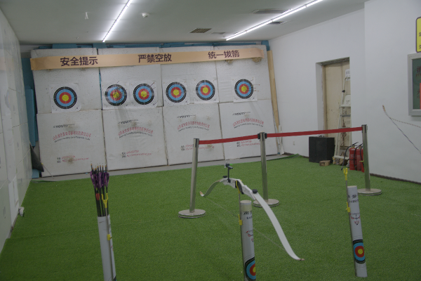
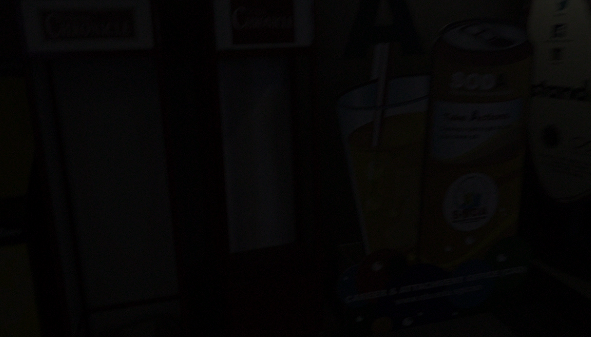
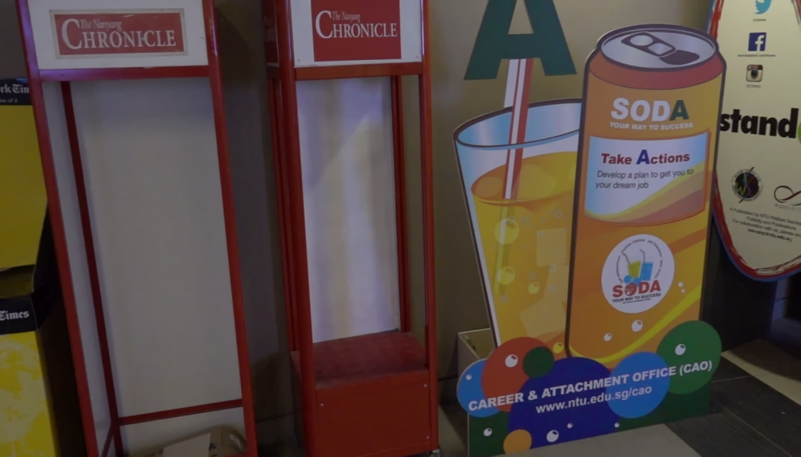
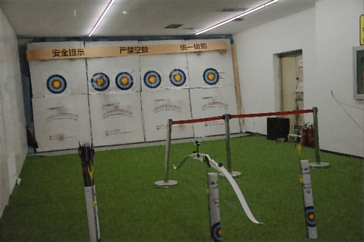
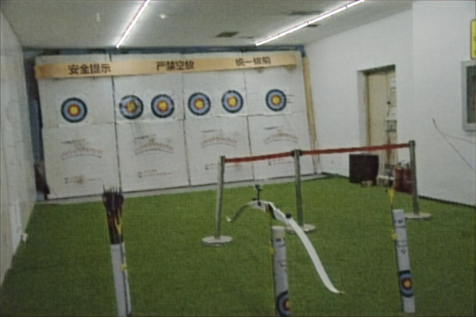
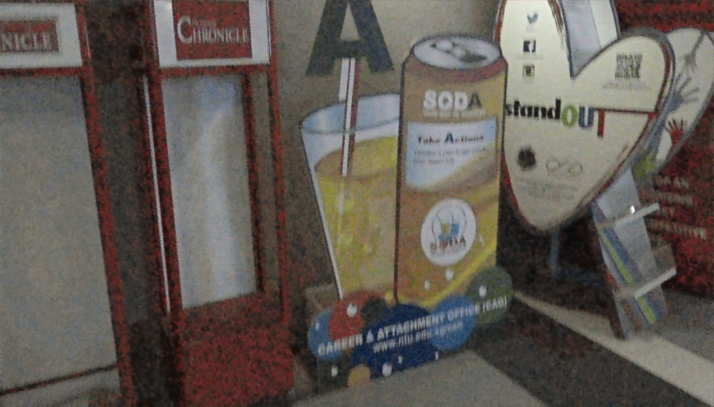
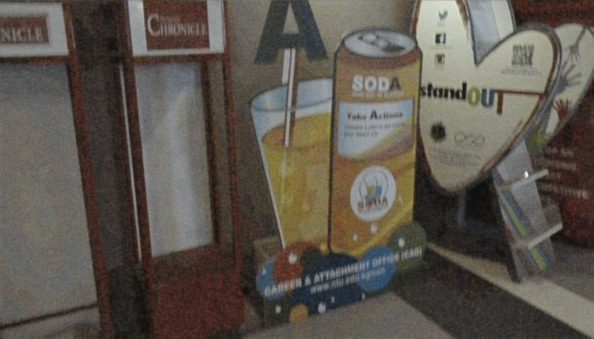
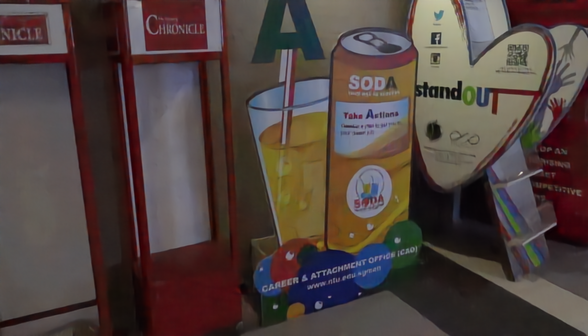
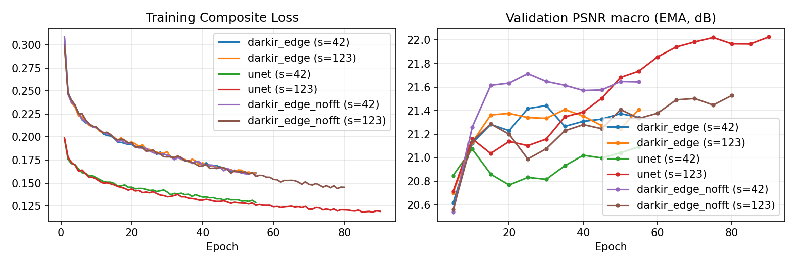

ĐẠI HỌC QUỐC GIA THÀNH PHỐ HỒ CHÍ MINH
TRƯỜNG ĐẠI HỌC CÔNG NGHỆ THÔNG TIN
Đề tài
TĂNG CƯỜNG CHẤT LƯỢNG ẢNH TRONG ĐIỀU KIỆN THIẾU SÁNG
BẰNG MẠNG NƠ-RON TÍCH CHẬP
Kế thừa kiến trúc DarkIR kết hợp cải tiến Max-RGB Prior và Gated Skip Connection
Môn học: Xử lý ảnh và Thị giác máy tính (CS2203) — Khóa 2026
Phần I — Đặt vấn đề & Phương pháp
1. Tổng quan & Mô hình đề xuất
- Thông tin thành viên & Đánh giá hoàn thành.
- Lý do & Tầm quan trọng của bài toán LLIE.
- Phát biểu bài toán: Input, Output, Ví dụ minh họa.
- Phương pháp giải quyết: Standard U-Net, DarkIR-Edge và biến thể triệt tiêu no-FFT.
Phần II — Thực nghiệm & Tổng kết
2. Kết quả & Đánh giá phản biện
- Thiết lập: Tập dữ liệu (4 miền), Độ đo, Môi trường.
- Kết quả định lượng: PSNR, SSIM, LPIPS, Kiểm định 95% CI, Chi phí FLOPs vs. Latency.
- Minh họa định tính: Tăng sáng & Khử mờ.
- Đánh giá ưu điểm, hạn chế & Tài liệu tham khảo.
HỌC VIÊN THỰC HIỆN
Phạm Văn Tiến — MSHV: 26848223
100%
HOÀN THÀNH
| Hạng mục công việc thực hiện | Kết quả đầu ra | Trạng thái |
|---|---|---|
| 1. Chuẩn bị dữ liệu đa miền | 1,650 cặp ảnh (4 domains: lolv2, huawei, nikon, blur; sequence-isolated split) | Hoàn thành |
| 2. Cài đặt mô hình & Baselines | Standard U-Net, DarkIR-Edge, ablation no-FFT & baselines truyền thống | Hoàn thành |
| 3. Huấn luyện & Kiểm định thống kê | 6 lần huấn luyện (3 models × 2 seeds) + Bootstrap 95% CI & paired tests | Hoàn thành |
| 4. Báo cáo khoa học & Slide | Báo cáo thực nghiệm, slide thuyết trình & mã nguồn tái lập (reproducible code) | Hoàn thành |
1. Suy thoái vật lý
Suy Thoái Kép Ban Đêm
- Thiếu sáng sâu: Sập dải động, mất chi tiết vùng tối.
- Nhiễu cảm biến: Tăng ISO làm bùng phát nhiễu hạt.
- Nhòe chuyển động: Phơi sáng lâu gây mờ biên cạnh.
Tối + Nhiễu + Nhòe
2. Hệ quả hạ nguồn
Tác Vụ Thị Giác Suy Giảm
- Thị giác máy tính: Nhận diện, phát hiện vật thể sụt giảm độ chính xác.
- Ứng dụng thực tế: Cần thiết cho camera giám sát, điện thoại, xe tự hành.
Tiền xử lý thiết yếu
3. Hướng phát thực hiện đề tài
Mô Hình Tối Ưu Tài Nguyên
- Mô hình SOTA lớn tốn hàng chục triệu tham số, nặng nề.
- Mục tiêu đề tài: Khống chế ngân sách nhẹ ~1.9M tham số.
Ngân sách ≈ 1.9M Params
Đầu vào (Input)
Ảnh Thiếu Sáng $I_{\text{low}}$
- Ảnh RGB thiếu sáng thực tế.
- Có thể kèm nhiễu hạt cảm biến và nhòe chuyển động (blur).
$I_{\text{low}} \in \mathbb{R}^{H \times W \times 3}$
Ánh xạ cần học
Mô Hình CNN Nhẹ $f_\theta$
- Cực đại hóa PSNR, SSIM; cực tiểu hóa LPIPS so với $I_{\text{gt}}$.
- Ràng buộc: Số lượng tham số $|\theta| \approx 1.9\text{M}$.
$\hat{I} = f_\theta(I_{\text{low}}) \approx I_{\text{gt}}$
Đầu ra (Output)
Ảnh Phục Hồi $\hat{I}$
- Ảnh RGB cùng kích thước chuẩn sáng bình thường.
- Độ sáng cân bằng, giảm nhiễu, màu sắc và chi tiết gần $I_{\text{gt}}$.
$\hat{I} \in \mathbb{R}^{H \times W \times 3}$
Kịch bản 1: Thiếu sáng sâu kèm nhiễu hạt cảm biến (Miền LOLv2-Real — mẫu low00690)
Input - Ảnh thiếu sáng

Ground Truth - Ảnh đủ sáng

Kịch bản 2: Thiếu sáng kèm nhòe chuyển động (Miền LOL-Blur — mẫu 0023)
Input - Ảnh thiếu sáng và mờ nhòe

Ground Truth - Ảnh đủ sáng và khử nhòe

Nhóm 1 — Không học sâu
Xử Lý Ảnh Truyền Thống
- Gamma 2.2: Biến đổi phi tuyến độ chói.
- CLAHE: Cân bằng biểu đồ cục bộ.
- MSRCR (Retinex): Tách độ rọi & phản xạ.
Khuếch đại nhiễu • Lệch màu
Nhóm 2 — Baseline CNN
Standard U-Net Gọn
- Encoder–Decoder đối xứng + Skip Connections.
- Tích chập 3×3 chuẩn, bảo toàn chi tiết không gian.
- Tối ưu hóa rất cao trên GPU (cuDNN).
1.93M Params • 18.45 GFLOPs
Nhóm 3 — Cảm hứng CVPR'25
Họ Mô Hình DarkIR-Edge
- Lấy cảm hứng từ DarkIR (CVPR 2025).
- Kết hợp nhánh không gian (Depthwise) và nhánh tần số (FFT/FreMLP).
- Đối chứng với biến thể tắt FFT (no-FFT).
1.92M / 1.50M Params
Kiến trúc Baseline CNN đối chuẩn
Thiết Kế Standard U-Net (b = 32)
- Khối tích chập kép (_cb): Mỗi tầng gồm
2 × (Conv 3×3 + GroupNorm(4) + ReLU). - Encoder & Decoder: 3 tầng downsample (MaxPool /2) đối xứng 3 tầng upsample (ConvTranspose2d ×2).
- Skip & Global Residual: Ghép kênh
torch.catchi tiết không gian và cộng thặng dư toàn cục+ Input.
Tổng số tham số
Ngân sách mô hình CNN nhẹ (≈ 1.9M)
1.928 M
Sơ Đồ Kiến Trúc UNetBaseline (base=32)
ConvBlock (_cb)
Skip Cat
Residual (+X)
Mỗi khối dùng 2 × (Conv 3×3 + GroupNorm + ReLU) + Nối tầng Skip Concats & Global Residual
Biến thể đề xuất (CVPR 2025 Inspiration)
Thiết Kế DarkIR-Edge (C = 24)
- Max-RGB Illumination Prior: Ghép kênh tiên nghiệm độ rọi
I_max$\to$ Intro Conv nhận 4 kênh[R, G, B, I_max]. - Encoder [1,2,3] & Decoder [3,1,1]: Khối EBlock tích hợp
FreMLP (2D-rFFT), DBlock đa tỉ lệDi-SpAM [1,4,9]+PixelShuffle. - Gated Skip & Side Supervision: Cổng lọc nhiễu
Residual Gated Skipở 3 tầng nối tắt và giám sát sâu tại Bottleneck8C → 3.
Tổng số tham số
Ngân sách mô hình nhỏ tương đương U-Net
1.924 M
Sơ Đồ Kiến Trúc DarkIREdge (width=24)
EBlock/FreMLP
Gated Skip
DBlock/Di-SpAM
Bảo toàn cấu trúc bất đối xứng [1,2,3] & [3,1,1] + Cải tiến I_max Prior & Residual Gated Skip
Mô hình 3 — Ablation Study
DarkIR-Edge (no-FFT) & Loss
- Biến thể no-FFT: Tắt hoàn toàn nhánh FFT/FreMLP, giữ nguyên phần còn lại.
- Tiết kiệm tài nguyên: Còn 1.495M tham số (−22.3%), 7.50 GFLOPs, latency 27.14 ms.
- Hàm mất mát tổng hợp: Kết hợp sai số điểm ảnh, cấu trúc SSIM và góc màu RGB.
$\mathcal{L} = \mathcal{L}_1 + 0.2\mathcal{L}_{\text{SSIM}} + 0.1\mathcal{L}_{\text{Color}} (+ 0.5\mathcal{L}_{\text{Side}})$
Quy trình thực nghiệm có kiểm soát
Huấn Luyện & Quy Tắc Kết Luận
- Tối ưu hóa: AdamW (lr $2\times 10^{-4} \to 10^{-6}$, Cosine $T_{\max}=100$), patch 256, batch 8, EMA 0.999.
- Early Stopping: Theo val-PSNR macro (patience 15, sau epoch 40); đánh giá bằng
best.ptEMA. - Độ tin cậy: Chạy 2 seed (42, 123); kết luận theo 95% CI bootstrap của $\Delta\text{PSNR}$ ghép cặp.
Pre-registered: 95% Bootstrap CI
| Miền (Domain) | Train | Val | Test | Nguồn dữ liệu & Đặc điểm |
|---|---|---|---|---|
| lolv2 | 639 | 50 | 100 | LOLv2-Real: Thiếu sáng và nhiễu hạt trong nhà. |
| huawei | 561 | 50 | 30 | LSRW-Huawei: Cảm biến smartphone (gap = 10). |
| nikon | — | — | 20 | LSRW-Nikon: Chỉ dùng để test (miền chưa thấy khi train). |
| blur | 150 | 10 | 40 | LOL-Blur: Tối + nhòe chuyển động (cách ly theo chuỗi video). |
| Tổng cộng | 1,350 | 110 | 190 | 1,650 cặp ảnh (kiểm soát SHA-256 split_manifest.json). |
Hệ thống chỉ số định lượng
1. Độ Đo & Thống Kê
- PSNR (dB ↑): Độ chính xác điểm ảnh & độ sáng toàn cục.
- SSIM (↑): Độ tương đồng cấu trúc không gian.
- LPIPS (↓): Khoảng cách đặc trưng cảm quan thị giác.
- Tổng hợp: Pooled (190 ảnh) & Macro (4 miền); kiểm định ghép cặp Bootstrap 95% CI + t-test/Wilcoxon.
Hạ tầng phần cứng & phần mềm
2. Môi Trường Thực Nghiệm
- Phần cứng huấn luyện & đo: Google Colab, GPU NVIDIA L4.
- Đo độ trễ (Latency): Độ phân giải chuẩn 600×400 ở chế độ FP32 và FP16, kèm Peak VRAM.
- Quản lý môi trường: Cô lập hoàn toàn bằng
uv/.venvcục bộ, cố định hạt giống ngẫu nhiên (seed 42, 123).
| Phương pháp | blur (40) | huawei (30) | lolv2 (100) | nikon (20) | Pooled (190) | Macro |
|---|---|---|---|---|---|---|
| Input (Low-Light) | 10.55 | 9.06 | 9.72 | 9.30 | 9.75 | 9.66 |
| Gamma 2.2 | 18.09 | 15.08 | 17.27 | 15.42 | 16.90 | 16.46 |
| CLAHE / MSRCR | 12.90 / 12.20 | 10.39 / 11.44 | 11.54 / 12.03 | 11.04 / 13.45 | 11.59 / 12.12 | 11.47 / 12.28 |
| DarkIR-Edge (no FFT) | 22.73 ± 0.27 | 20.87 ± 0.09 | 20.64 ± 0.29 | 17.21 ± 0.07 | 20.76 ± 0.23 | 20.36 ± 0.18 |
| DarkIR-Edge (ours) | 22.93 ± 0.21 | 20.80 ± 0.03 | 20.55 ± 0.01 | 17.24 ± 0.10 | 20.74 ± 0.06 | 20.38 ± 0.08 |
| Standard U-Net | 23.37 ± 0.00 | 20.65 ± 0.01 | 21.60 ± 0.43 | 17.17 ± 0.10 | 21.36 ± 0.22 | 20.70 ± 0.09 |
| DarkIR-m (CVPR'25, ref) | 27.37 | 18.63 | 20.01 | 16.43 | 20.96 | 20.61 |
| Phương pháp | SSIM Pooled (↑) | SSIM Macro (↑) | LPIPS Pooled (↓) | LPIPS Macro (↓) |
|---|---|---|---|---|
| Input (Low-Light) | 0.217 | 0.225 | 0.554 | 0.557 |
| Gamma 2.2 | 0.595 | 0.555 | 0.356 | 0.363 |
| CLAHE / MSRCR | 0.405 / 0.410 | 0.384 / 0.401 | 0.466 / 0.471 | 0.472 / 0.450 |
| DarkIR-Edge (no FFT) | 0.730 ± 0.009 | 0.670 ± 0.004 | 0.353 ± 0.060 | 0.367 ± 0.048 |
| DarkIR-Edge (ours) | 0.728 ± 0.005 | 0.668 ± 0.003 | 0.368 ± 0.009 | 0.378 ± 0.006 |
| Standard U-Net | 0.749 ± 0.000 | 0.680 ± 0.000 | 0.277 ± 0.002 | 0.305 ± 0.002 |
| DarkIR-m (CVPR'25, ref) | 0.728 | — | 0.233 | — |
| Cặp so sánh (A − B) | Miền (n) | $\Delta\text{PSNR}$ (dB) | 95% Bootstrap CI | p (Wilcoxon) | % A thắng | Kết luận |
|---|---|---|---|---|---|---|
| Edge − U-Net | pooled (190) | −0.615 | [−0.891, −0.335] | 4.4e-5 | 38.4% | U-Net thắng |
| Edge − U-Net | lolv2 (100) | −1.050 | [−1.516, −0.558] | 1.2e-5 | 30.0% | U-Net thắng |
| Edge − U-Net | blur (40) | −0.442 | [−0.832, −0.075] | 0.042 | 35.0% | U-Net nhỉnh hơn |
| Edge − U-Net | huawei / nikon | +0.148 / +0.065 | CI chứa 0 | ≥ 0.205 | 56.7% / 60% | Không khác biệt |
| Edge − no-FFT | pooled (190) | −0.014 | [−0.231, +0.199] | 0.431 | 52.6% | Chưa có bằng chứng |
| Edge − no-FFT | blur (40) | +0.194 | [−0.088, +0.472] | 0.089 | 62.5% | CI chứa 0 (Nhiễu) |
| Mô hình | Params | GFLOPs @256² | Latency FP32 (FPS) | Latency FP16 (FPS) | Peak VRAM |
|---|---|---|---|---|---|
| DarkIR-Edge (C=24) | 1.924 M | 8.75 G (−53%) | 31.52 ms (31.7) | 26.61 ms (37.6) | 308 MB |
| DarkIR-Edge (no-FFT) | 1.495 M (−22%) | 7.50 G | 27.14 ms (36.8) | 21.41 ms (46.7) | 293 MB |
| Standard U-Net (base=32) | 1.928 M | 18.45 G | 12.98 ms (77.1) | 11.38 ms (87.9) | 342 MB |
1. Nghịch lý FLOPs vs. Latency
- Edge ít hơn 53% FLOPs nhưng chậm hơn ×2.43 lần trên L4 do nghẽn băng thông bộ nhớ ở DW-Conv/FFT/Gating.
2. Giá trị thực tiễn của no-FFT
- Bỏ nhánh FFT giúp giảm 22% tham số và ~14% latency FP32 mà không giảm chất lượng đo được.
1. Input Low-Light
PSNR: 8.09 dB
2. Standard U-Net

PSNR: 25.31 dB | SSIM: 0.865
3. DarkIR-Edge (ours)

PSNR: 28.49 dB | SSIM: 0.854
4. Ground Truth (GT)
Ảnh chuẩn tham chiếu
1. Input (Low + Blur)

Mẫu LOL-Blur #0010
2. Standard U-Net

Pooled Blur: 23.37 dB
3. DarkIR-Edge (ours)

Pooled Blur: 22.93 dB
4. DarkIR-m (Ref Ceiling)

Pooled Blur: 27.37 dB (+4 dB)

Lịch sử Loss & Val-PSNR Macro (EMA) của 6 runs
Chẩn đoán thực nghiệm
Bản Chất Sai Số & Hội Tụ
- Lệch sáng toàn cục (LOLv2): Chuẩn hóa độ sáng theo GT giúp PSNR tăng vọt +5.65 → +5.97 dB → lỗi chính là lệch sáng nền, không phải mất chi tiết.
- FFT không sửa sáng: Gap độ sáng của Edge (5.97 dB) và no-FFT (5.71 dB) xấp xỉ nhau.
- Hội tụ: Edge bão hòa sớm (~ep 30–55); U-Net s123 tiếp tục tăng tới ep 90 (22.03 dB val).
Đóng góp thực tiễn
1. Về Mô Hình & Hiệu Năng
- Học sâu vượt xa truyền thống: Cả 3 mô hình CNN nhẹ (~1.9M) đều vượt Gamma 2.2 từ +3.8 dB trở lên (+9 dB so với CLAHE/MSRCR).
- Baseline U-Net gọn rất mạnh: Đạt chất lượng cao nhất (21.36 dB) và tốc độ nhanh nhất (12.98 ms / 77 FPS trên L4).
- Phát hiện tối ưu từ no-FFT: Loại bỏ FFT giảm 22% tham số và ~14% độ trễ mà không giảm chất lượng đo được.
Đóng góp phương pháp luận
2. Về Quy Trình Khoa Học
- Kiểm soát dữ liệu chặt chẽ: Hợp nhất 4 miền (1,650 cặp), cách ly chuỗi video chống rò rỉ dữ liệu.
- Đánh giá thống kê nghiêm ngặt: Huấn luyện 2 seed độc lập, kiểm định ghép cặp Bootstrap 95% CI đăng ký trước.
- Trung thực học thuật: Báo cáo khách quan cả kết quả âm (negative results) khi biến thể đề xuất không vượt baseline.
Giới hạn thực nghiệm (Threats to Validity)
1. Những Hạn Chế Tồn Tại
- DarkIR-Edge thua U-Net: Kém hơn 0.62 dB PSNR, LPIPS cao hơn và chậm hơn ×2.4 lần; nhánh FFT chưa chứng minh được lợi ích.
- Khử mờ chưa đạt: Dữ liệu blur quá ít (150 train / 10 val), thua xa trần DarkIR-m (~4 dB).
- Confound độ dài huấn luyện: Early stopping làm số epoch không đều (55 vs. 90 epoch;
best.ptở ep 25–90), có thể thiên về U-Net. - Quy mô đánh giá: Chỉ 2 seed; nikon 20 ảnh; chỉ đo trên L4; nhận xét định tính chủ quan.
Giải thích & Kế hoạch v3
2. Giả Thuyết & Hướng Mở Rộng
- Giả thuyết vì sao U-Net mạnh: Tính toán cục bộ dày đặc gấp 2.1× FLOPs ở cùng số tham số; các khối tần số/gating cần tập dữ liệu lớn hơn nhiều.
- Hướng phát triển thực nghiệm v3:
• Tăng dữ liệublurlên 400 train / 50 val.
• Huấn luyện cố định 70 epochs (bỏ early stopping, chấmfinal.pt) để loại bỏ confound.
• Bổ sung độ đo lệch sáng có dấu, $\Delta E$, độ nét Laplacian & khảo sát mù.
Mô hình Học sâu & Tập dữ liệu
1. Kiến Trúc & Benchmark
- [1] DarkIR: C. Feijoo et al., "DarkIR: Robust Low-Light Image Restoration," IEEE/CVF CVPR, 2025.
- [2] U-Net: O. Ronneberger et al., "U-Net: Convolutional Networks for Biomedical Image Segmentation," MICCAI, 2015.
- [3] LEDNet / LOL-Blur: S. Zhou et al., "LEDNet: Joint Low-Light Enhancement and Deblurring in the Dark," ECCV, 2022.
- [4] LOL-v2: W. Yang et al., "Sparse Gradient Regularized Deep Retinex Network for Robust LLIE," IEEE TIP, 2021.
Dữ liệu thực tế, Độ đo & Truyền thống
2. Đánh Giá & Phương Pháp Cơ Sở
- [5] LSRW: J. Hai et al., "R2RNet: Low-light Image Enhancement via Real-low to Real-normal Network," JVCIR, 2023.
- [6] LPIPS: R. Zhang et al., "The Unreasonable Effectiveness of Deep Features as a Perceptual Metric," IEEE/CVF CVPR, 2018.
- [7] CLAHE: K. Zuiderveld, "Contrast Limited Adaptive Histogram Equalization," Graphics Gems IV, 1994.
- [8] MSRCR: D. J. Jobson et al., "A Multiscale Retinex for Bridging the Gap Between Color Images and Human Observation," IEEE TIP, 1997.